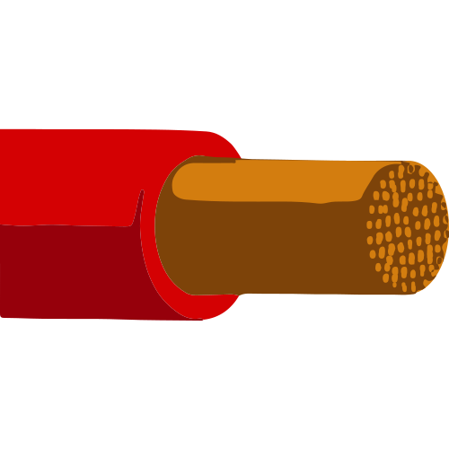

전송 속도(Data Rate)
구리 케이블은 전기를 흔들어 신호를 만드는데, 1초에 얼마나 많이
흔드느냐(주파수)가 속도를 결정합니다.

현재 수준
-
일반적인 환경(Cat.5e~Cat.6)에서는 1Gbps가 표준이며, 서버실이나
고성능 장비(Cat.6A~Cat.7)에서는 10Gbps까지 성능을 냅니다.
-
Cat.5e: 100MHz 주파수를 사용하여 1Gbps 속도를 냅니다. (현재 가장
일반적인 성능)
-
Cat.6: 250MHz 주파수를 사용하여 1Gbps를 안정적으로 보내며, 짧은
거리(37~55m)에서는 10Gbps까지 성능이 나옵니다.
-
Cat.6A: 500MHz 주파수를 사용하여 100m 전체 구간에서 10Gbps 속도를
유지합니다.
-
Cat.8: 무려 2000MHz(2GHz)로 신호를 흔듭니다. 덕분에 40Gbps라는
압도적인 속도를 내지만, 너무 빨리 흔들다 보니 에너지가 빨리
소진되어 30m만 지나도 신호가 죽어버립니다.
물리적 한계
-
최신 규격인 Cat.8은 40Gbps까지 도달했지만, 주파수를 높일수록
노이즈(간섭)가 폭발적으로 늘어나기 때문에 이 이상의 속도를 내는
것은 매우 어렵습니다.
전송 거리와 신호 감쇠 (Distance & Attenuation)

100m의 법칙
-
구리 케이블 성능의 가장 큰 약점은 '거리'이며, 모든 이더넷 구리
케이블은 최대 100m까지만 신호를 보낼 수 있도록 설계되어 있습니다.
에너지 손실
-
전기가 구리라는 금속 저항을 통과하며 열로 변하기 때문에, 거리가
멀어질수록 신호의 세기가 급격히 약해집니다.
-
모든 구리 규격이 100m를 마지노선으로 잡는 이유입니다.
속도와의 반비례
-
속도를 높이려면(주파수를 높이면) 감쇠가 더 심해집니다. 실제로
40Gbps 성능을 내려면 거리를 30m 이내로 줄여야만 합니다.
대역폭 (Bandwidth)
주파수 대역
-
Cat.5e는 100MHz, Cat.6A는 500MHz의 대역폭을 가집니다.
한계
-
구리선은 전기적 간섭(Crosstalk) 때문에 이 도로를 무한정 넓힐 수
없습니다. 도로를 넓히기 위해 선을 더 촘촘하게 꼬거나 은박지로
감싸야 하므로 케이블이 점점 무거워지고 두꺼워지는 성능상의 제약이
생깁니다.
전자기 간섭 (EMI) 및 노이즈 저항력
전기적 노이즈
-
주변의 고압선, 모터, 심지어 옆에 있는 다른 랜선에서 나오는
전자파가 데이터 신호를 방해합니다.
성능 저하
-
노이즈가 심한 곳에서는 전송 속도가 갑자기 떨어지거나 데이터 오류가
발생하여 다시 데이터를 보내야 하는 상황이 생깁니다. 이를 방지하기
위해 성능이 좋은 규격일수록 내부에 복잡한 차폐 구조를 가집니다.